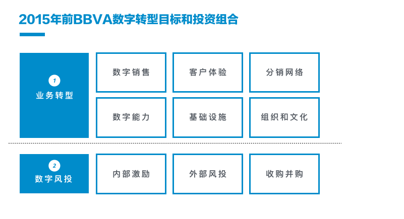

<!DOCTYPE html>
<html>
<head>
    <meta charset="utf-8" />
    <meta http-equiv="X-UA-Compatible" content="IE=edge" />

    <title>BBVA数字十年</title>
    <meta name="description" content="" />

    <meta name="HandheldFriendly" content="True" />
    <meta name="viewport" content="width=device-width, initial-scale=1.0" />

    <link rel="shortcut icon" href="../favicon.ico">

    <link rel="stylesheet" type="text/css" href="../assets/css/screen.css?v=73caf55e8d" />
    <link rel="stylesheet" type="text/css" href="http://fonts.googleapis.com/css?family=Merriweather:300,700,700italic,300italic|Open+Sans:700,400" />

    <link rel="canonical" href="index.html" />
    <meta name="referrer" content="origin" />
    
    <meta property="og:site_name" content="一只土贼" />
    <meta property="og:type" content="article" />
    <meta property="og:title" content="BBVA数字十年" />
    <meta property="og:description" content="2017年9月27日，超过160年历史、西班牙第二大银行BBVA的首席财务官Jaime Sáenz de Tejada宣布「数字转型的成果已经具备商业可量化性」。去年12月，其数字化转型的重要指标「数字渠道占有率」在西班牙本土首次突破50%的门槛，其11个主要国家市场中已有6个完成数字化转折点（Digital Tipping Point）的目标。 超过160年历史的西班牙第二大银行——BBVA(Banco Bilbao Vizcaya Argentaria) 今年1月，整个南美洲用户的数字占有率整体突破50%，BBVA的数字转型在过去10年里，取得发达市场国家金融业中难得一见的成就。BBVA的数字转型值得金融领域创新者学习，让我们仔细梳理过去十年里BBVA数字转型的脉络。 2007～2011年：交互范式探索 在经历2007年全球金融危机之后，2008年的世界对于金融服务商而言是全新的，多个市场的经济衰退；更加严格的法规；负利率对银行利润的巨大侵蚀；更加意义深远的，是消费者对于银行的「信任危机」——认为金融机构应该为这场灾难负责；另一个方兴未艾且野心勃勃的是互联网经济正蓄势待发进入全新阶段。决心转型BBVA所迫切需要的，是重新思考银行和客户的关系，并在数字时代定义全新的交互范式。 2007年，BBVA的创新战略始于其技术运营部，最初的目标是在银行业引入更多新兴技术，该部门主导了2011年前BBVA的多个数字创新项目。 投资线上客户体验" />
    <meta property="og:url" content="http://localhost:2368/bbva-digital-transformation/" />
    <meta property="og:image" content="http://localhost:2368/content/images/2018/03/results-vela-grupo-bbva-2t17-1920x0-c-f.jpg" />
    <meta property="article:published_time" content="2018-03-13T00:01:19.276Z" />
    <meta property="article:modified_time" content="2018-03-13T00:25:16.666Z" />
    <meta property="article:tag" content="数字转型" />
    <meta property="article:tag" content="战略" />
    
    <meta name="twitter:card" content="summary_large_image" />
    <meta name="twitter:title" content="BBVA数字十年" />
    <meta name="twitter:description" content="2017年9月27日，超过160年历史、西班牙第二大银行BBVA的首席财务官Jaime Sáenz de Tejada宣布「数字转型的成果已经具备商业可量化性」。去年12月，其数字化转型的重要指标「数字渠道占有率」在西班牙本土首次突破50%的门槛，其11个主要国家市场中已有6个完成数字化转折点（Digital Tipping Point）的目标。 超过160年历史的西班牙第二大银行——BBVA(Banco Bilbao Vizcaya Argentaria) 今年1月，整个南美洲用户的数字占有率整体突破50%，BBVA的数字转型在过去10年里，取得发达市场国家金融业中难得一见的成就。BBVA的数字转型值得金融领域创新者学习，让我们仔细梳理过去十年里BBVA数字转型的脉络。 2007～2011年：交互范式探索 在经历2007年全球金融危机之后，2008年的世界对于金融服务商而言是全新的，多个市场的经济衰退；更加严格的法规；负利率对银行利润的巨大侵蚀；更加意义深远的，是消费者对于银行的「信任危机」——认为金融机构应该为这场灾难负责；另一个方兴未艾且野心勃勃的是互联网经济正蓄势待发进入全新阶段。决心转型BBVA所迫切需要的，是重新思考银行和客户的关系，并在数字时代定义全新的交互范式。 2007年，BBVA的创新战略始于其技术运营部，最初的目标是在银行业引入更多新兴技术，该部门主导了2011年前BBVA的多个数字创新项目。 投资线上客户体验" />
    <meta name="twitter:url" content="http://localhost:2368/bbva-digital-transformation/" />
    <meta name="twitter:image:src" content="http://localhost:2368/content/images/2018/03/results-vela-grupo-bbva-2t17-1920x0-c-f.jpg" />
    <meta name="twitter:label1" content="Written by" />
    <meta name="twitter:data1" content="熊子川" />
    <meta name="twitter:label2" content="Filed under" />
    <meta name="twitter:data2" content="数字转型, 战略" />
    
    <script type="application/ld+json">
{
    "@context": "https://schema.org",
    "@type": "Article",
    "publisher": {
        "@type": "Organization",
        "name": "一只土贼",
        "logo": "http://localhost:2368/content/images/2015/04/tuzei-logo-1.png"
    },
    "author": {
        "@type": "Person",
        "name": "熊子川",
        "image": "http://localhost:2368/content/images/2015/09/image_1442553695-265918.jpg",
        "url": "http://localhost:2368/author/zichuan/",
        "sameAs": []
    },
    "headline": "BBVA数字十年",
    "url": "http://localhost:2368/bbva-digital-transformation/",
    "datePublished": "2018-03-13T00:01:19.276Z",
    "dateModified": "2018-03-13T00:25:16.666Z",
    "image": "http://localhost:2368/content/images/2018/03/results-vela-grupo-bbva-2t17-1920x0-c-f.jpg",
    "keywords": "数字转型, 战略",
    "description": "2017年9月27日，超过160年历史、西班牙第二大银行BBVA的首席财务官Jaime Sáenz de Tejada宣布「数字转型的成果已经具备商业可量化性」。去年12月，其数字化转型的重要指标「数字渠道占有率」在西班牙本土首次突破50%的门槛，其11个主要国家市场中已有6个完成数字化转折点（Digital Tipping Point）的目标。 超过160年历史的西班牙第二大银行——BBVA(Banco Bilbao Vizcaya Argentaria) 今年1月，整个南美洲用户的数字占有率整体突破50%，BBVA的数字转型在过去10年里，取得发达市场国家金融业中难得一见的成就。BBVA的数字转型值得金融领域创新者学习，让我们仔细梳理过去十年里BBVA数字转型的脉络。 2007～2011年：交互范式探索 在经历2007年全球金融危机之后，2008年的世界对于金融服务商而言是全新的，多个市场的经济衰退；更加严格的法规；负利率对银行利润的巨大侵蚀；更加意义深远的，是消费者对于银行的「信任危机」——认为金融机构应该为这场灾难负责；另一个方兴未艾且野心勃勃的是互联网经济正蓄势待发进入全新阶段。决心转型BBVA所迫切需要的，是重新思考银行和客户的关系，并在数字时代定义全新的交互范式。 2007年，BBVA的创新战略始于其技术运营部，最初的目标是在银行业引入更多新兴技术，该部门主导了2011年前BBVA的多个数字创新项目。 投资线上客户体验"
}
    </script>

    <meta name="generator" content="Ghost 0.8" />
    <link rel="alternate" type="application/rss+xml" title="一只土贼" href="../rss/index.html" />
</head>
<body class="post-template tag-shu-zi-zhuan-xing tag-zhan-lue nav-closed">

    <div class="nav">
    <h3 class="nav-title">Menu</h3>
    <a href="index.html#" class="nav-close">
        <span class="hidden">Close</span>
    </a>
    <ul>
            <li class="nav-" role="presentation"><a href="../index.html">首页</a></li>
            <li class="nav-" role="presentation"><a href="../about-me/index.html">关于我</a></li>
            <li class="nav-english-article" role="presentation"><a href="../tag/english/index.html">English Article</a></li>
            <li class="nav-" role="presentation"><a href="../tag/zhao-mu/index.html">和我工作</a></li>
            <li class="nav-" role="presentation"><a href="../tag/she-ji/index.html">设计</a></li>
            <li class="nav-" role="presentation"><a href="../tag/shang-ye/index.html">商业</a></li>
            <li class="nav-" role="presentation"><a href="../tag/yi-meng/index.html">异梦</a></li>
            <li class="nav-" role="presentation"><a href="../tag/zhi-ye/index.html">职业</a></li>
            <li class="nav-" role="presentation"><a href="../tag/whatever/index.html">文骚</a></li>
            <li class="nav-" role="presentation"><a href="../tag/min-jie-zi-xun-ri-ji/index.html">敏捷咨询日记</a></li>
            <li class="nav-ppt" role="presentation"><a href="../tag/zhi-zuo-she-ji-gan-pptde-jian-yi/index.html">PPT设计</a></li>
    </ul>
        <a class="subscribe-button icon-feed" href="../rss/index.html">Subscribe</a>
</div>
<span class="nav-cover"></span>


    <div class="site-wrapper">

        


<header class="main-header post-head " style="background-image: url(../content/images/2018/03/results-vela-grupo-bbva-2t17-1920x0-c-f.jpg)">
    <nav class="main-nav overlay clearfix">
        <a class="blog-logo" href="../index.html"></a>
            <a class="menu-button icon-menu" href="index.html#"><span class="word">Menu</span></a>
    </nav>
</header>

<main class="content" role="main">
    <article class="post tag-shu-zi-zhuan-xing tag-zhan-lue">

        <header class="post-header">
            <h1 class="post-title">BBVA数字十年</h1>
            <section class="post-meta">
                <time class="post-date" datetime="2018-03-12">12 March 2018</time>  on <a href="../tag/shu-zi-zhuan-xing/index.html">数字转型</a>, <a href="../tag/zhan-lue/index.html">战略</a>
            </section>
        </header>

        <section class="post-content">
            <p>2017年9月27日，超过160年历史、西班牙第二大银行BBVA的首席财务官Jaime Sáenz de Tejada<a href="https://www.bbva.com/en/results-digital-transformation-already-tangible/">宣布</a>「数字转型的成果已经具备商业可量化性」。去年12月，其数字化转型的重要指标「数字渠道占有率」在<a href="https://www.bbva.com/en/bbva-reaches-digital-tipping-point-spain/">西班牙本土首次突破50%的门槛</a>，其11个主要国家市场中已有6个完成数字化转折点（Digital Tipping Point）的目标。</p>

<p>
<em>超过160年历史的西班牙第二大银行——BBVA(Banco Bilbao Vizcaya Argentaria)</em></p>

<p>今年1月，整个南美洲用户的数字占有率<a href="https://www.bbva.com/en/50-of-bbvas-customers-in-south-america-are-digital/">整体突破50%</a>，BBVA的数字转型在过去10年里，取得发达市场国家金融业中难得一见的成就。BBVA的数字转型值得金融领域创新者学习，让我们仔细梳理过去十年里BBVA数字转型的脉络。</p>

<h2 id="20072011">2007～2011年：交互范式探索</h2>

<p>在经历2007年全球金融危机之后，2008年的世界对于金融服务商而言是全新的，多个市场的经济衰退；更加严格的法规；负利率对银行利润的巨大侵蚀；更加意义深远的，是消费者对于银行的「信任危机」——认为金融机构应该为这场灾难负责；另一个方兴未艾且野心勃勃的是互联网经济正蓄势待发进入全新阶段。决心转型BBVA所迫切需要的，是重新思考银行和客户的关系，并在数字时代定义全新的交互范式。</p>

<p>2007年，BBVA的<a href="https://www.rainmaking.io/blog/what-banks-are-actually-doing-to-innovate">创新战略</a>始于其技术运营部，最初的目标是在银行业引入更多新兴技术，该部门主导了2011年前BBVA的多个数字创新项目。</p>

<h3 id="">投资线上客户体验</h3>

<p>2008年，BBVA推出了第一个数字项目「Tú Cuentas（意为你的账单）」———一个支出管理的线上产品，线上银行客户可以通过该平台统一管理多种支付手段的个人消费记录。四个月后「Tú Cuentas」获得了<a href="https://finance.strands.com/wp-content/uploads/2014/08/Strands-BBVA-case-study-July-2009.pdf">初步的成功</a>，近1/3的线上银行客户成为其用户。这一产品有着简单直接的产品逻辑：</p>

<ol>
<li>通过数字的方式帮助客户完成一项与个人金融相关的工作（管理支出）；  </li>
<li>让客户在数字渠道上停留，产生数据；  </li>
<li>通过数据累积推荐个性化的其他个人金融产品；  </li>
<li>逐步开放给非客户，适应其支出管理的需求，成为获客数字渠道。</li>
</ol>

<p>
<em>BBVA的Tú Cuentas可以让客户统一分析多个账户的收支情况</em></p>

<h3 id="">开放创新平台</h3>

<p>Tú Cuentas的成功开始让BBVA意识到寻找BBVA在数字时代的定位，需要回到消费者身边。2009年2月，首届「<a href="https://opentalent.bbva.com/en/">Open Talent</a>」的创新大赛举办，总共375个项目被启动。有趣的是，首届大赛的冠军<a href="https://www.pidecita.com/">Pidecita</a>并非金融领域创新，而是一家为线上预定提供解决方案的创业公司，这也显示了BBVA对消费者端到端体验的重视程度。</p>

<p>至今Open Talent已经成为超过80个国家参与，金融创新领域<a href="https://www.bbva.com/en/the-worlds-biggest-fintech-competition-launches-for-its-tenth-year/">最大的赛事之一</a>，源源不断向BBVA输出创意和新一代数字人才。</p>

<p></p>

<h3 id="">人性化的触点体验</h3>

<p>2009年，与IDEO合作、历时三年的<a href="https://www.fastcodesign.com/1662281/a-radical-atm-redesign-thats-sexy-ipad-enabled">ABIL</a>项目正式部署，这款完全抛弃了实体键盘操作而改用触摸屏的ATM机引入许多人性化的设计概念，包括一个名为Hero的虚拟助理，以及极致化的交互方式。</p>

<p></p>

<p>2010年，受到ABIL项目中Hero这个虚拟助理的启发，BBVA开始研发新的交互方式，一个名为<a href="https://www.technologyreview.com/s/428430/siris-new-cousin-works-as-a-bank-teller/">Lola</a>的全新虚拟助手将在两年后出现在线上银行的右下角，Lola以对话的形式辅助客户完成操作，这比后来的Conversational UI的兴起整整提前7年。</p>

<p>
<em>Lola是一个虚拟的助理，通过对话的方式完成超过65%的线上银行服务</em></p>

<p>人性化是BBVA在20012年以前的重要主题，2011年11月，BBVA具有里程碑意义的个人金融服务平台：<a href="https://www.bbva.es/eng/general/landings/revolucion-contigo.jsp">BBVA Contigo Adviser</a>，这个平台使得客户随时随地通过手机与金融顾问互动，这个平台背后是大量系统的集成，也意味着BBVA在2012年以前就已完成了多个核心系统的整合，最终实现了客户与银行交互方式的重大变革。</p>

<p></p>

<p>在2008到2011年，BBVA在客户交互方式上进行了重大投入，从Hero、到Lola、再到Contigo，一个个虚拟角色创造了全新的交互范式，这是BBVA数字十年的第一个里程碑，即交互范式的再造。</p>

<h2 id="20122015">2012～2015年：商业模式再造</h2>

<p>多个创新项目的成功，以及Open Talent创新大赛的持续举办，BBVA拥有了客户的口碑、数字化专业人才、以及广泛的合作网络，在此基础之上，数字化需要强有力的业务模式进行支持。BBVA很快意识到创新应该与最高优先级的业务目标紧密结合，一支隶属国际事业（Global Banking）下的独立的创新团队正式成立，重点不再是技术导入，而是和IT部门紧密合作，将数字化能力引入企业最重要的业务领域，例如支付和多渠道。</p>

<h3 id="">加码移动支付</h3>

<p>2012年，作为在支付领域的重要投入，BBVA推出其第一个移动现金平台「Efectivo Móvil（Mobile Cash）」。付款人通过<a href="https://www.bbvacontinental.pe/personas/canales/efectivo-movil/">Efectivo Móvil</a>生成一个短信代码发送给收款人，收款人再用这个短信代码在任意一个西班牙的ATM机完成取现。</p>

<p></p>

<p>2013年，BBVA继续加码移动支付领域，推出旗下数字钱包「<a href="https://www.movilzona.es/2013/12/04/bbva-wallet-la-app-para-gestionar-tarjetas-y-pagos-desde-el-smartphone/">Wallet</a>」，Wallet使得用户可以在手机应用中管理各种银行卡，并实现线上支付、手机线下近场支付（通过一个特别的贴纸）。</p>

<p></p>

<p>2013年BBVA对于技术的投入高达24亿欧元，是2006年的两倍，对核心领域的数字化投资获得显著成效，当年，其数字银行平台每天处理2.5亿笔交易，为2006年的近2.8倍 (<a href="https://www2.deloitte.com/content/dam/insights/us/articles/2993_Digital-transformation-in-financial-services/DUP_Digital-transformation-in-financial-services.pdf">参考</a>)。</p>

<h3 id="">大规模资本运作</h3>

<p>商业模式再造除了对于核心业务领域的投入，还包括一连串的资本运作，通过资本快速获得智力资源。2014年2月，BBVA通过<a href="https://www.simple.com/company/simple-bbva-compass-we-re-moving">117亿美元收购</a>美国纯数字银行<a href="https://www.simple.com/">Simple</a>。</p>

<p></p>

<p>次年，以<a href="https://techcrunch.com/2015/11/24/uk-mobile-only-atom-bank-picks-up-128m-led-by-bbva-owner-of-simple-in-the-u-s/">4500万英镑购置</a>英国纯移动银行 <a href="http://localhost:2368/bbva-digital-transformation/www.atombank.co.uk">Atom Bank</a> 29.5%股权。</p>

<p></p>

<p>2013年BBVA投资1亿美元成立旗下风险投资部门<a href="https://www.crunchbase.com/organization/bbva-ventures">BBVA Ventures</a>，将着重投资金融科技领域的创业公司。三年时间里，BBVA完成的主要投资有：</p>

<ul>
<li>2014年<a href="https://www.bbva.com/en/bbva-ventures-announces-investment-in-supply-chain-finance-company-taulia/">1300万美元</a>（联合新加坡经济发展投资公司EDBI）投资供应链金融创业公司<a href="https://taulia.com/en/">Taulia</a>；</li>
<li>2014年<a href="https://elpais.com/economia/2014/11/25/actualidad/1416876263_118364.html">9200万美元</a>投资数字签名公司<a href="https://www.docusign.com">DoduSign</a>；</li>
<li>2014年<a href="https://www.prnewswire.com/news-releases/personal-capital-raises-50-million-280754012.html">5000万美元</a>（联合USAA）投资数字财富管理公司<a href="http://localhost:2368/bbva-digital-transformation/www.personalcapital.com">Personal Capital</a>；</li>
<li>2015年<a href="https://www.pymnts.com/news/2015/nyse-usaa-and-bbva-make-75m-coinbase-investment/">7500万美元</a>（联合NYSE和USAA）投资比特币创业公司<a href="https://www.coinbase.com">Coinbase</a>;</li>
<li>2015年<a href="https://www.businesswire.com/news/home/20150408006710/en/Prosper-Marketplace-Announces-165-Million-Series-Financing">1.65亿美元</a>（联合USAA等）投资个人信贷公司<a href="http://localhost:2368/bbva-digital-transformation/www.prosper.com">Prosper</a>；</li>
</ul>

<h3 id="">进入大数据领域</h3>

<p>2014年，BBVA将开放平台作为商业模式再造的第三种战略投资，正式成立大数据公司<a href="https://www.bbvadata.com/">BBVA Data &amp; Analytics</a>，从2014年起这间公司就开始从交易数据中深度挖掘金融行为和人类社会活动的关系，例如从支付行为看<a href="http://bbvatourism.vizzuality.com/">西班牙旅游分布和趋势</a>：</p>

<p></p>

<p>2014年对于数据能力的投入在若干年后转化为BBVA进一步商业模式转型的助推器，真正推动BBVA从一间传统银行逐渐转型为金融信息科技公司。</p>

<h3 id="">调整组织战略和品牌定义</h3>

<p>商业模式的革新同时也需要组织架构的调整和公司战略的支持，2014年，数字银行部门已经发展成一个拥有3000名员工的庞大组织，这个组织拥有市场、技术、设计、人才、文化多种功能，并横跨多个业务部门，致力于推动全组织的数字转型。</p>

<p>2015年，Francisco Gonzalez在当年的股东大会上<a href="https://www.bbva.com/en/francisco-gonzalez-we-are-building-the-best-digital-bank-of-the-21st-century/">宣布BBVA的转型目标</a>：「建设21世纪全球最佳数字银行...把BBVA打造成完全数字化的公司」。</p>

<p>至此，BBVA的转型战略逐渐清晰化（<a href="https://www.slideshare.net/BBVA/bbva-digitalbanking">参考</a>），即：</p>

<ol>
<li>通过多项投资组合（包含数字销售、客户体验、分销渠道、数字能力、基础设施、组织文化）在内部驱动业务转型；  </li>
<li>通过风险投资（包括内部投资、外部投资和收购）在内部挖潜或外部快速获得智力资源。</li>
</ol>

<p></p>

<p>2015年最后一个季度，BBVA在已有的数字化成果上继续调整其转型目标，正式提出了其数字化转型的核心价值定位——「把机会赋予所有人（Our purpose is to bring the age of opportunity to everyone）」（<a href="https://www.slideshare.net/BBVA/corporatepresentation-4q-15">参考</a>），并详细解读了其意涵：</p>

<ol>
<li>To Bring：BBVA的手段，即将资本、工具、产品、和建议作为能力赋予；  </li>
<li>To Everyone：BBVA服务的对象是所有个人、家庭、创业者、企业主、公众服务或私营企业、还包括BBVA的员工；  </li>
<li>The Age of Opportunity：技术的核心价值为这个社会带来无限可能；</li>
</ol>

<p>这个核心价值，在2017年正式<a href="https://www.bbva.com/en/bbvas-new-slogan-creating-opportunities/">上升为核心品牌价值</a>——「创造机会」甚至被放入公司的标识，成为数字转型近几年的指南针，这也标志BBVA的数字转型真正进入公司品牌核心。</p>

<p></p>

<h2 id="20162018">2016～2018年：全面推动开放银行</h2>

<p>经过8年的数字转型，BBVA的业务已经发生了显著变化，在移动端的投入使得门店活动（Branch Activity）的比例下降到2016年3月的41%，比2013年下降20%；同期移动端用户达到940万，较上年增幅高达45%（<a href="https://www.slideshare.net/BBVA/corporate-presentation-1q16-63000135">参考</a>）。稳步增长的数字渠道使用比例，使得BBVA有能力通过数字化真正实现品牌的新意涵——创造机会，其具体实施包含如下几个方面：</p>

<h3 id="">资本持续运作</h3>

<p>2016年2月，BBVA关闭了原有的风投机构BBVA Ventures，重新投资<a href="https://techcrunch.com/2016/02/11/bbva-shuts-in-house-venture-arm-pours-250m-into-new-fintech-vc-propel-venture-partners/">2.5亿美元</a>建立新的投资机构<a href="http://propel.vc/">Propel Venture Partners</a>，背后的原因有：一为BBVA希望风投机构脱离母体更加独立运作，二为在独立运作后获得更大的投资权。此点也体现出公司对于资本运作专业化、独立化、规模化的战略要求。</p>

<p>目前，Propel管理着17家不同类型创业公司的股份，类型覆盖区块链、数字签名、保险、理财、员工福利等，为BBVA提供技术、客户体验、和解决方案的可能性，它们包括：</p>

<p></p>

<p>其投资组合主要分布企业解决方案、个人金融产品、以及客户体验相关工具三个方向，较为均匀的分布体现着BBVA对企业特别是中小企业市场、创新互联网金融产品、以及客户数字体验的战略支持。</p>

<p></p>

<p>资本运作逼迫BBVA走到金融创新的最前沿，倒逼组织内部转型、调整优先级、构建开放的基础设施、寻找下一个业务增长点。</p>

<h3 id="">基础设施投资推动平台化</h3>

<p>「开放」从数字转型的一开始就成为其核心关键字，从最早的「<a href="https://opentalent.bbva.com/en/">Open Talent</a>」创新大赛开始，到2014年建立的大数据公司<a href="https://www.bbvadata.com/">BBVA Data &amp; Analytics</a>，最终演化成独立商业模式。2016年2月，BBVA宣布上线其在后来有深远意义的<a href="https://www.bbvaapimarket.com/home">Open API平台</a>，为互联网金融创业公司提供API接口，最初开放的<a href="https://bankinnovation.net/2016/03/bbva-launches-alpha-version-of-api-marketplace/">四个接口</a>包括：</p>

<ol>
<li>PayStates：聚合BBVA卡支付信息方便第三方数据分析或商业情报；  </li>
<li>Connect：为第三方应用授权访问BBVA服务；  </li>
<li>Accounts：为第三方应用授权访问BBVA账户信息；  </li>
<li>Card：为电商网站绑定BBVA支付方式</li>
</ol>

<p>开放API基础设施的建设不但帮助BBVA广泛吸纳第三方服务，提供无缝和无处不在的客户体验，也为业务扩张和整合节约大量成本。2016第四季度，BBVA正式宣布对BBVA Compass（美国业务）和2014年收购的美国纯数字银行<a href="https://www.simple.com/">Simple</a>的<a href="https://www.finextra.com/newsarticle/28693/simple-to-move-customer-accounts-to-bbva-compass-platform">整合</a>，其背后使用的正是其西班牙银行业务所提供的API。</p>

<p>对技术基础设施的投资从未停止，2016年5月，<a href="https://investors.redhat.com/news-and-events/press-releases/2016/05-25-2016-115522917">BBVA宣布与Red Hat合作</a>，在IaaS（Infrastructure-as-a-Service ）、PaaS（Platform-as-a-Service）、以及云管理平台等领域进行深入合作；10月，<a href="https://www.bbva.com/en/bbva-works-amazon-web-services-accelerate-groups-transformation/">BBVA宣布与Amazon Web Services合作</a>，以获得处理每天5亿4200万笔交易的云计算能力；次月，<a href="http://www.bankingtech.com/2016/11/bbva-first-in-spain-to-launch-full-account-opening-via-mobile/">BBVA与CRM领域巨头Salesforce合作</a>，在西班牙完美实现全手机开户。</p>

<p>在数据领域，BBVA已经开始探索将数据作为企业服务的新模式——2016年11月，「<a href="https://www.bbvadata.com/introducing-commerce360/">Commerce 360</a>」上线,为中小型企业提供交易（来源于丰富的POS数据）分析能力。</p>

<p></p>

<p>2017年3月，BBVA<a href="https://www.bbva.com/en/bbva-creates-global-head-data-position/">宣布设立全球级数据职位</a>（Head of Data），进一步稳固数据能力在全组织的战略地位。</p>

<p>同月，BBVA继续向英国移动银行Atom<a href="https://www.bbva.com/en/bbva-backs-uk-banking-disruptor-atom-further-investment/">追加投资</a>，结合自有数据和开放能力，成为在2018年前具备交付开放银行能力的欧洲少数金融机构之一。</p>

<p>一系列在基础设施、平台化、数据方向的投资逐步实现，帮助BBVA在2018年「<a href="http://m.opinion.caixin.com/m/2017-11-06/101166384.html">PSD2</a>（欧盟支付服务指令修正案 Payment Services Directive）」做好准备（<em>注：欧盟2016年通过PSD2(Payment Service Directive 2 支付服务规划2)法令，规定在2018年1月13日起欧洲银行必须把支付服务和相关客户数据开放给第三方服务商。</em>），在「<a href="https://www.mckinsey.com/industries/financial-services/our-insights/data-sharing-and-open-banking">开放银行 (Open Banking)</a>」时代，与不断涌现的金融创新颠覆者与替代金融（Alternative Finance）、和互联网巨头竞争，并领导整个传统金融服务业的创新。</p>

<h2 id="">写在最后</h2>

<p>从2007年BBVA正式启动数字转型，到2015宣布最终数字转型目标的8年时间里，BBVA经历两个显著的阶段：在前一个阶段的四年里，BBVA意识到传统银行出现了身份危机，如何重新定位银行对消费者意味着什么，是数字转型成功的基础，其核心，是「<strong>在数字时代，银行应该用怎样的方式与消费者互动</strong>」的问题。带着这样的问题，BBVA花了四年时间投入在消费者触点体验上，并在一开始就将创新和开放画上等号。</p>

<p>后四年，转型的目标逐渐转向业务领域，其核心，是「<strong>在数字时代，银行该如何演进业务模式以适合和消费者全新互动方式</strong>」的问题。在这个阶段，BBVA一方面大幅度投入核心业务（如支付和分销网络）的数字化能力，另一方面大规模对金融科技的创业公司进行资本输出以快速获得智力资源。此外，对数据进行提前投入，为下一阶段商业模式的终极演化提供燃料，并在公司结构和品牌上为转型释放空间。</p>

<p>近两年，BBVA的终于有资格挑战数字转型的最高层——「<strong>如何让银行成为释放整个社会经济潜力的赋能者，而非利用信息壁垒盈利的中间商</strong>」。在这个阶段，BBVA一方面持续进行大规模资本运作，同时在基础设施如数据、开放平台、云计算等领域加大投入，逐步将基础设施平台化，构建全新的商业模式。</p>

<p></p>

<p>2018年BBVA十年转型的领航者，CEO Francisco González 在达沃斯世界经济论坛<a href="https://www.bbva.com/en/francisco-gonzalez-at-davos-we-have-to-transform-the-bank-into-digital-company-as-soon-as-we-can/">预言</a>：全世界有2万家银行，但在不远的将来，我们可能不需要这么多。</p>

<p></p>

<p>银行业百年来构建于信息孤岛上的商业模式，已经远远落后于其他数字化程度更深的行业，未来只有一种商业模式能够成功，这便是BBVA十年来数字转型所一直追求的——「开放」，也是所有数字转型企业的终极目标。</p>
        </section>

        <footer class="post-footer">


            <figure class="author-image">
                <a class="img" href="../author/zichuan/index.html" style="background-image: url(../content/images/2015/09/image_1442553695-265918.jpg)"><span class="hidden">熊子川's Picture</span></a>
            </figure>

            <section class="author">
                <h4><a href="../author/zichuan/index.html">熊子川</a></h4>

                    <p>Read <a href="../author/zichuan/index.html">more posts</a> by this author.</p>
                <div class="author-meta">
                    <span class="author-location icon-location">San Francisco</span>
                    
                </div>
            </section>


            <section class="share">
                <h4>Share this post</h4>
                <a class="icon-twitter" href="https://twitter.com/intent/tweet?text=BBVA%E6%95%B0%E5%AD%97%E5%8D%81%E5%B9%B4&amp;url=http://localhost:2368/bbva-digital-transformation/"
                    onclick="window.open(this.href, 'twitter-share', 'width=550,height=235');return false;">
                    <span class="hidden">Twitter</span>
                </a>
                <a class="icon-facebook" href="https://www.facebook.com/sharer/sharer.php?u=http://localhost:2368/bbva-digital-transformation/"
                    onclick="window.open(this.href, 'facebook-share','width=580,height=296');return false;">
                    <span class="hidden">Facebook</span>
                </a>
                <a class="icon-google-plus" href="https://plus.google.com/share?url=http://localhost:2368/bbva-digital-transformation/"
                   onclick="window.open(this.href, 'google-plus-share', 'width=490,height=530');return false;">
                    <span class="hidden">Google+</span>
                </a>
            </section>


        </footer>

    </article>
</main>

<aside class="read-next">
    <a class="read-next-story " style="background-image: url(../content/images/2018/10/roads-unsplash.jpg)" href="../clear-decision-role/index.html">
        <section class="post">
            <h2>决策要义</h2>
            <p>《战略十篇》的最后一篇书稿，来自于Paul Rogers和Marcia Blenko ，原文刊于《哈佛商业评论》2006年1月刊（链接）。 决策是任何商业形式最重要的活动，也是所有领导者的必要能力；决策的低效与失效直接伤害企业绩效和领导表现，相反，高效决策往往与高效企业和领导者强相关。 那么决策失败的根源来自何处？让我们回到企业的决策环境。 从外部来看，市场需求的快速变化弱化了完美逻辑和广泛数据对决策的效用，企业需要在调研不完备、&hellip;</p>
        </section>
    </a>
    <a class="read-next-story prev " style="background-image: url(../content/images/2018/01/3039608-poster-p-1-most-innovative-companies-2015-westfield-labs.jpg)" href="../a-new-cx-strategic-planning-framework/index.html">
        <section class="post">
            <h2>复杂客户体验的战略成长框架</h2>
            <p>本文基于厄瓜多尔最大商超品牌客户体验规划项目实践完成。 客户画像与客户体验地图通常是客户体验规划的常用设计实践，但在真实规划项目中我们发现，对于某些复杂的客户体验上下文，如大型场超、综合体、零售百货等企业，客户画像多样、客户交互路径多变，应对这样的企业，我们应该采用全新的设计思路，构建复杂客户体验战略。 传统逻辑 让我们回到传统客户体验设计的核心思路，其要素点为： 建立上下文；   识别客户并建立客户画像；   甄选核心客户画像；   甄选核心客户的客户目标；&hellip;</p>
        </section>
    </a>
</aside>


        <footer class="site-footer clearfix">
            <section class="copyright"><a href="../index.html">一只土贼</a> &copy; 2019</section>
            <section class="poweredby">Proudly published with <a href="https://ghost.org">Ghost</a></section>
        </footer>

    </div>

    <script type="text/javascript" src="https://code.jquery.com/jquery-1.12.0.min.js"></script>
    <!-- You can safely delete this line if your theme does not require jQuery -->
<script type="text/javascript" src="https://code.jquery.com/jquery-1.11.3.min.js"></script>

<script>
var _hmt = _hmt || [];
(function() {
  var hm = document.createElement("script");
  hm.src = "//hm.baidu.com/hm.js?d7f406aaa2e48a4cca39518080c7b553";
  var s = document.getElementsByTagName("script")[0]; 
  s.parentNode.insertBefore(hm, s);
})();
</script>
    <script type="text/javascript" src="../assets/js/jquery.fitvids.js?v=73caf55e8d"></script>
    <script type="text/javascript" src="../assets/js/index.js?v=73caf55e8d"></script>

</body>
</html>
